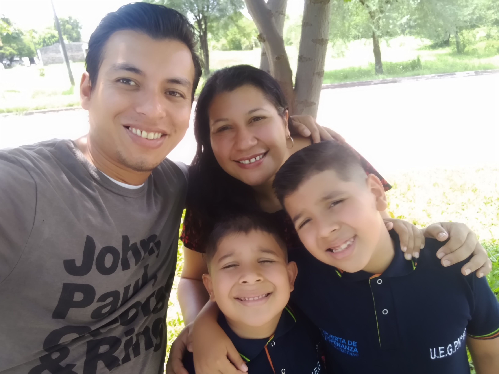

Ayala Nicolas Alejandro | WDD 130
my name is Nico, I am married and have two children. i work, study and i am mormon and very happy I am the first counselor in a small branch, I also served a full-time mission in Mendoza Argentina, that is why I added a link so that you can learn more about the temple that unfortunately I was not able to see when I served there because the land had been purchased by the church recently, but now that it is in operation I have plans to visit it, but this time with my family